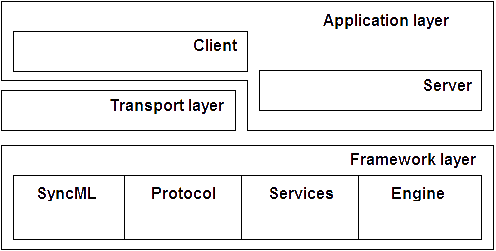
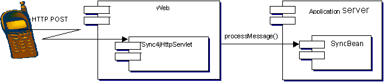
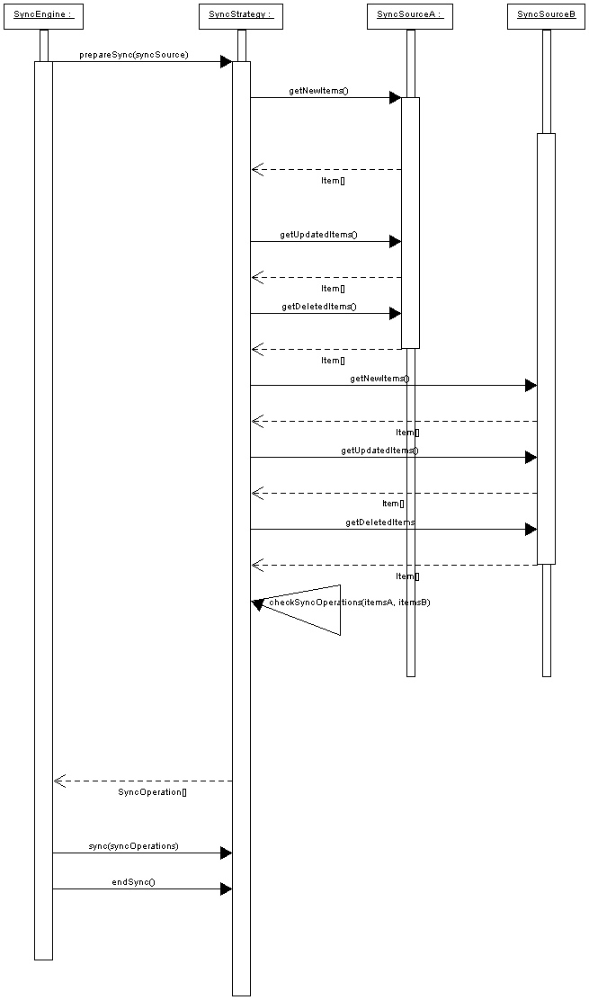
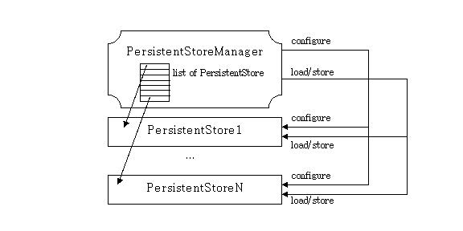
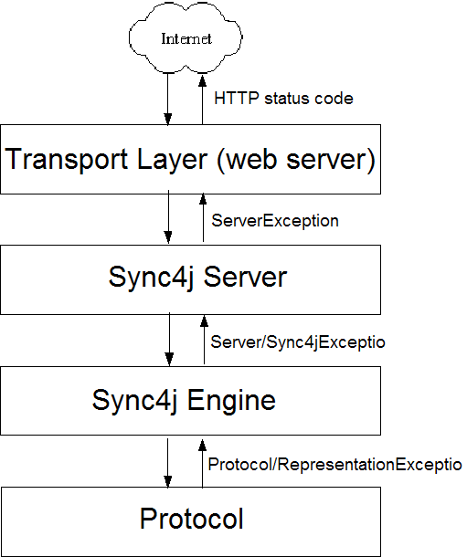
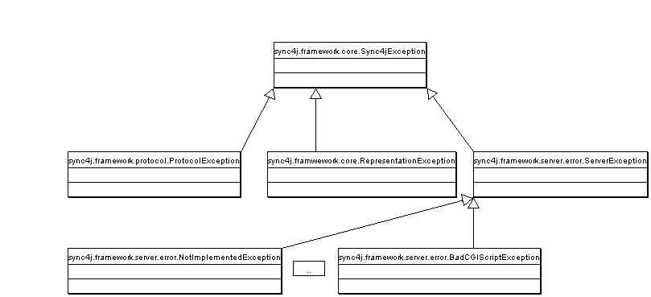

|
12 Nov 2002
|
Change History
|
Date |
Author |
Description |
Rev # |
|
06 Oct 2002 |
Stefano Fornari |
Initial version |
1.0 |
|
12 Nov 2002 |
Stefano Fornari |
Added persistent store architecture |
1.1 |
|
29 Nov 2002 |
Stefano Fornari |
Added security architecture |
1.2 |
|
20 Dec 2002 |
Stefano Fornari |
Added synchronization process |
1.3 |
|
23 Dec 2002 |
Stefano Fornari |
Added error and exception handling |
1.4 |
|
|
|
|
|
Table of Content
1.High-level Architecture 5
1.1.The Framework 5
1.2.Transport Layer 8
1.3.Application Layer 8
1.4.The Synchronization Engine 8
1.5.A Simple Example 9
2.The Synchronization Process 13
2.1.Preparation 13
2.2.Synchronization 14
2.3.Finalization 15
2.4.Synchronization Sequence Diagram 15
3.The Persistent Store 17
3.1.The Interface sync4j.server.store.PersistentStore 17
3.1.1.sync4j.server.store.SyncPersistentStore 18
3.2.sync4j.server.store.PersistentStoreManager 18
4.Security Architecture 20
4.1.Officer 20
4.2.JAAS 21
4.3.sync4j.framework.security.SimpleOfficer 21
4.4.sync4j.framework.security.JAASOfficer 21
4.5.Sync4jEgine Configuration 22
5.Error and Exception Handling 23
5.1.Sync4jException 24
5.2.ServerException 24
5.2.1.SyncML Exceptions 24
5.3.ProtocolException 24
6.References and Resources 26
6.1.References 26
6.2.Resources 26
A SyncML server is a software that receives SyncML requests from many remote devices, update their remote data with local modifications and update local data with remote updates.
Sync4j implements the following functional blocks:
the SyncML protocol
synchronization engine
a server waiting for requests
the interface to remote devices
The Sync4j architecture is a layered as depicted in Figure 1.

Figure 1 – Sync4j layered architecture
The layer at the bottom is a framework that implements and provides to the other layers the protocol implementation, horizontal services and the interface of the synchronization engine. On this basement, the transport and the application layers are developed. The application layer can be further divided in client and server application layers, where with server is intended the software that accepts and processes SyncML messages.
The server relays on the transport layer in order to receive messages delivered with different protocols such as HTTP, SMTP, OBEX, etc. In the current implementation of Sync4j the server is implemented as an EJB service deployable in a J2EE compliant application server.
Client applications take advantage of the services provided by the framework in order to code and decode SyncML messages and to send and receive SyncML messages on one of the supported transport protocol.
Many packages are part of the base framework. The most important are:
sync4j.framework.client;
sync4j.framework.core;
sync4j.framework.engine;
sync4j.framework.logging;
sync4j.framework.protocol;
sync4j.framework.security;
sync4j.framework.server.
sync4j.framework.core implements the block that in Figure 1 is called SyncML and groups the foundation classes used to represent a message. In practice, this module allows an easy translation of a XML stream into an objects tree, which is much more manageable from a programming point of view. Vice versa, an object representing a message can be easily converted in the corresponding XML representation. The classes of the framework are responsible for checking that a given message is a valid SyncML message. Note that this validity check guarantees only that the XML structure can really represent a message, regardless the context in which the message is processed. The scope of this check is to verify that the representation rules are all respected.
A SyncML communication is a sequence of correlated messages that must follow additional rules, dictated as well by the specification of the protocol. For instance, consider the following message:
<SyncHdr>
<VerDTD>1.1</VerDTD>
<VerProto>SyncML/1.1</VerProto>
<SessionID>1028886155551</SessionID>
<MsgID>2</MsgID>
<Target>
<LocURI>URI:2002</LocURI>
</Target>
<Source>
<LocURI>http://www.sync4j.org/sync4j</LocURI>
</Source>
</SyncHdr>
</SyncML>
It is not a valid SyncML message in any context because it does not contain a <SyncBody> tag. The following instead:
<SyncHdr>
<VerDTD>1.1</VerDTD>
<VerProto>SyncML/1.1</VerProto>
<SessionID>1028886155551</SessionID>
<MsgID>2</MsgID>
<Target>
<LocURI>URI:2002</LocURI>
</Target>
<Source>
<LocURI>http://www.sync4j.org/sync4j</LocURI>
</Source>
</SyncHdr>
<SyncBody>
<Status>
<CmdID>5</CmdID>
<MsgRef>1</MsgRef>
<CmdRef>3</CmdRef>
<Cmd>Sync</Cmd>
<TargetRef>db1</TargetRef>
<SourceRef>db1</SourceRef>
<Data>405</Data>
</Status>
<Add><CmdID>3</CmdID>
<NoResp/>
<Meta><Type xmlns='syncml:metinf'>...</Type></Meta>
<Item>
<Target>
<LocURI>item1</LocURI>
</Target>
<Source>
<LocURI>item1</LocURI>
</Source>
<Data>some data </Data>
</Item>
</Add>
</SyncBody>
</SyncML>
Even if it follows the representation rules is valid only in the case a previous initialization was made and the client requested the synchronization of the database db1. The package in charge of those aspects is sync4j.framework.protocol.
The two packages sync4j.framework.security and sync4j.framework.logging represent the module that in Figure 1 is called Services. They implement logging and security services. Note that for the security aspects, Sync4j adheres to the Java Authentication and Authorization Service (JAAS) delivered with the JDK 1.4. It is than possible to develop your own authentication and authorization policy independently by the development of Sync4j and just configure it to use your own module instead the standard one.
A package that plays and important role in the Sync4j architecture is sync4j.framework.engine. It provides a basic interface for a synchronization engine. It defines only the interface of the engine in order to have a pluggable architecture for the engine. Generally speaking, the process of receiving and interpreting a synchronization message and the process of updating the data source and producing the modifications for the client are two distinct processes. And they can be applied independently one from the other. For example, from the synchronization point of view it does not really matter if a synchronization request came from a SyncML message or a simple HTTP request. In the same way, from the protocol point of view, it does not really matter which conflict resolution the synchronization engine will adopt. With this pluggable architecture the business logic of the protocol and of the synchronization can be developed and extended separately (and without touching the server or the other modules) to meet at best the requirements. Sync4j provides a reference implementation ready to be used.
The last two packages, sync4j.framework.client and sync4j.framework.server include common classes for the development of client and server applications.
At this stage the support for the various transport protocol is implemented. At the moment, Sync4j supports only the HTTP protocol by the mean of the servlet sync4j.transport.server.Sync4jServlet.java. Other protocol will be added in the next releases.
sync4j.client and sync4j.server implement a client and a server SyncML respectively. Currently the development is concentrating most on the server side, which is the most significant component of Sync4j. Moreover, with the adoption of the SyncML protocol by the manufacturers of remote devices, it is foreseeable that the client protocol stack will be implemented directly in the devices. The development of the server gets the priority.
In the current architecture, the server is implemented as an Enterprise Java Bean that can be deployed into whatever J2EE application server. This choice is due to the following factors:
decoupling between the transport protocol and the synchronization logic;
application servers provide out of the box many facilities and services that otherwise should be redeveloped (i.e. connection management, thread management, security, scalability, availability, reliability);
it is a widely accepted standard;
reusing the existing application server infrastructure simplifying management and deployment.
A synchronization server is not helpful without synchronization logic, such as the set of rules followed to:
identify the sources and the destinations of data to be synchronized;
identify what data needs to be updated/added/deleted
determine how updates must be applied;
detect conflicts;
resolve conflicts.
The synchronization engine is the core of a data synchronization server. Sync4j allows developers to plug their own implementation of the synchronization engine. Therefore, developers can extend the basic behaviour in order to meet their own requirements. Developers can even completely substitute the default implementation with a custom engine developed from scratch.
Figure
2 – Example System Architecture
The basic interfaces and classes are grouped in the package sync4j.framework.engine. The reference implementation, instead, is grouped under sync4j.server.engine.
Since the synchronization process is the core of the synchronization engine, it is described in more detail in a dedicated section.
This section presents how a simple SyncML client looks like. Figure 2 shows the system architecture in its building blocks. A client SyncML using the HTTP protocol as transport protocol, is an application that can make an HTTP post request. The web server receives the requests and fires the execution of Sync4jServlet, which, after reading the entire message, invokes the EJB on the SyncML server, making a remote call to processMessage(). The response message is then returned to the client again through the servlet.
The SyncML client can be any kind of device or program. In our example it is implemented as a java program. Here is it makes the request:
import sync4j.framework.core.*;
import sync4j.transport.http.client.HttpClientConnection;
...
public class PostSyncML {
...
Message postRequest(Message request) {
HttpClientConnection syncMLConnection =
new HttpClientConnection(SYNC_URL);
return syncMLConnection.sendMessage(request);
}
...
}
Given the SyncML message and the access URL, postRequest() uses the Sync4j class HttpClientConnection in order to send the message to the server.
When the servlet processes the request, it invokes SyncBean:
public final class Sync4jServlet
extends javax.servlet.http.HttpServlet
{
...
public void doPost(
final HttpServletRequest httpRequest,
final HttpServletResponse httpResponse)
throws ServletException, IOException {
final String strContentType = httpRequest.getContentType();
final int iContentLength = httpRequest.getContentLength();
if (iContentLength < 1)
{
throw new Error("iContentLength < 1");
}
byte[] yaRequestData = new byte[iContentLength];
InputStream in = httpRequest.getInputStream();
int n = 0;
int iBytesRead = 0;
try {
do {
n = in.read(yaRequestData,
iBytesRead,
yaRequestData.length - iBytesRead);
if (n > 0){
iBytesRead += n;
}
} while (n != -1);
} catch (IOException ex) {
handleError(httpRequest, httpResponse, "Error reading the request", ex);
return;
} finally {
...
}
...
final HttpSession session = httpRequest.getSession();
SyncHolder holder = (SyncHolder)
session.getAttribute(HOLDER_ATTRIBUTE_NAME);
if (null == holder) {
try {
InitialContext ctxInit = new InitialContext();
ISyncHomeLocal home = (ISyncHomeLocal)
ctxInit.lookup("java:comp/env/ejb/SyncBean");
ISyncLocal sync = home.create();
holder = new SyncHolder(sync);
session.setAttribute(HOLDER_ATTRIBUTE_NAME, holder);
} catch (Exception e) {
...
}
ISyncLocal sync = holder.getISyncLocalObject();
ISyncResponse resp = null;
try {
resp = sync.processMessage(yaRequestData, strContentType);
} catch (EJBException e) {
...
}
OutputStream out = httpResponse.getOutputStream();
httpResponse.setContentType(resp.getMimeType());
String strResponseMsg = resp.getMessageString();
httpResponse.setContentLength(strResponseMsg.length());
out.write(strResponseMsg.getBytes());
out.flush();
}
...
}
The synchronization process is driven by the synchronization engine, which in turn is a concrete implementation of the interface sync4j.framework.engine.SyncEngine. Sync4j provides its own engine, represented by the class sync4j.server.engine.Sync4jEngine.
The synchronization process is accomplished in three steps:
Preparation
Synchronization
Finalization
Sync4jEngine gets through these steps and coordinates their execution, but delegates most of the synchronization logic to an auxiliary class, implementation of the SyncStrategy interface. The concrete implementation used by Sync4j is sync4j.server.engine.Sync4jStrategy.
The following sections describe in more detail each phase and other key aspect of the synchronization engine architecture. The section 2.4 puts all together describing the sequence diagram of the synchronization process.
This phase is crucial in the process of
synchronizing items. In fact, it is at this point that the data
sources (called SyncSources) are queried for new, updated and deleted
items (called in this context SyncItems), eventually since a
particular date and time. After having obtained all the modified
items from the different sources, the synchronization process follows
this algorithm:
Given a set of sources A, B, C, D, etc,
the synchronization process takes place between two sources at a
time: A is first synchronized with B, then
AB with C, then ABC with D and so on.
Now, given the sources to be
compared, suppose A and B, the goal of the algorithm is to produce an
array of SyncOperation
objects, in which each element represents a particular
synchronization action, i.e. create an
item in the source A, delete the item X from the source B,
etc. Sometime it is not possible decide what to do, thus a
SyncConflict operation is
used. A conflict might be solved by something external the
synchronization process, for instance by a user action. In order to
create the SyncOperation[]
array, each item in the source A is compared with each item in the
source B, creating when necessary the SyncOperation
object. Below is a table of all possible situations.
|
Source A → ↓ Source B |
New |
Deleted |
Updated |
Synchronized/Unchanged |
Not Existing |
|---|---|---|---|---|---|
|
New |
C |
C |
C |
C |
B |
|
Deleted |
C |
X |
C |
X |
X |
|
Updated |
C |
C |
C |
B |
B |
|
Synchronized/Unchanged |
O |
X |
A |
= |
B |
|
Not Existing |
A |
X |
A |
A |
X |
Where:
X : item not existing
C : conflict
A : item A replaces item B
B : item B replaces item A
Items are compared based on a subset of the information they contain called key, which in the synchronization engine takes the name of SyncItemKey. It is responsibility of the SyncSource to create proper and unique key for each item. The SyncItemKey is stored in the SyncItem and can be returned calling getKey(). The comparison is accomplished by the method equals() of the SyncItemKey object.
The SyncOperation object thus created contain the following pieces of information:
The SyncItem belonging to the A source (item A)
The SyncItem belonging to the B source (item B)
The operation to be performed
Based on the operation and on the presence of item A or B, the synchronization engine will be able to perform the right action.
This algorithm is encapsulated in a specific class called SyncStrategy, which is used by SyncEngine through the method prepareSync().
The synchronization step is the phase where the sync operations prepared in the previous step are executed. Executing a SyncOperation means apply the required modifications to the sync sources involved. The modification applied depends on the content of each SyncOperation and on the table above.
For example, the SyncOperation represented by:
operation: new
item A: ITM0040102001 ← (the item key)
item B: null
Results in the addition of item B to the SyncSource B. Instead, if the operation is:
operation: new
item A: null
item B: ITM0376488440
The item B will be added to the source A. The following combination will result in a conflict:
operation: new
item A: ITM0040102001
item B: ITM0040102001
Note that item A and item B in a SyncOperation object always reference to the same SyncItem (the SyncItemKey is the same); they are simply different images of the item coming from two different sources.
This phase is implemented in the sync(SyncOperation[]) method of SyncStrategy.
The third and last step is intended for clean up purposes. It is simply implemented with the empty SyncStartegy's method endSync().
In this section, an high level overview
of the overall synchronization process implemented in Sync4j is
described. The sequence of operations is depicted in Figure 3 that
will serve as a guide for the following description.
The
SyncEngine object drives
the execution of all steps in its sync()
method. In it, the requested sources are scanned for modified items.
For each source, the sequence drown in the picture is executed.
SyncSourceA and
SyncSourceB represent the
two images of the same source; generally, one source is the client
view of the database, whilst the other source is the server view of
the same data source.
First of all, SyncEngine
calls SyncStrategy.prepareSync(SyncSource[])
which returns an array of SyncOperation
to be performed. Here the synchronization engine has the opportunity
to further elaborate the required operations. For example it is at
this level that the engine can decide how to solve conflicts.
After
preparation and additional operation elaboration, the engine is ready
to fire the the execution of the real data sources synchronization.
It does it again delegating the task to the sync()
method of SyncStrategy.
Again, the engine can do other work
before ending the process calling SyncStartegy.endSync().
Regarding
the SyncStrategy object,
the picture shows only the main tasks SyncStrategy
performs. First of all it queries source A and B about which items
have changed and collects all of them in a two lists, one for source
A's items and one for source B's items. At this point SyncStrategy
is ready to compare those two sets of items and create the
SyncOperation[] array.
This is done by calling checkSyncOperation(SyncItem[],
SyncItem[]) where the rules described in the sections above
are applied.
Note that the SyncStrategy is part of the
configuration of Sync4jEngine. In fact, the engine keeps a reference
to the SyncStrategy interface and not to the Sync4jStrategy concrete
implementation. This means that a different implementation of the
synchronization strategy is very easily pluggable in Sync4j. It is
sufficient to implement SyncStrategy and configure accordingly the
Sync4jEngine component.

Figure
3The synchronization process
This chapter presents the architecture and the design of the persistent store, which is the module used to access the database for the operations that concern the operation of the server itself. The persistent store is not intended to store data to be synchronized; that is matter for the synchronization engine and server framework. The scope of this store is to make persistent the kind of information required by the Sync4j server in order to support the protocol and provide its services.
The persistent store is designed without tighting it to a persistence technology (Entity beans, JDO), but it wants to be generic enough to be easily integrated with any of such persistence models. I have to admit, though, that I do not consider Entity EJBs a good candidate as implementation of a persistent store. Instead, the new emerging standard JDO looks much more appropriate and maybe in the future the Sync4j team will select a JDO provider to be used with Sync4j.
The core of the persistent store architecture is the interface sync4j.server.store.PersistentStore, described in the following section. The next chapters describe also some of the concrete implementations developed in Sync4j and how they are used by the server module.
This is the interface that defines the services that a concrete implementation must provide in order to work as persistent store. By the mean of the PersistentStore interface, the server can work with whatever concrete implementation is made available to it.
PersistentStore is a class that stores objects in a persistent media such as a database. The work of saving and reading data to and from the store is delegated to the store(obj) and read(obj) methods, which can take the appropriate actions based on the type of the object that has to be written or read.
Note that those two methods return true if they know how to deal with the given object; that return value is not intended to be a success indicator. It just tells the caller that the PersistentStore knew how to process the given object.
A PersistentStore can be configured calling configure(map) with a java.util.Map parameter containing the configuration properties. The content of the map is implementation specific.
This design is based on the following design principles:
Have a flexible and light way to access the database for the storage purposes of the server activity.
Centralize the database access logic in few specific classes, as opposed to spread the database access code whenever required by the classes.
Keep the roles and responsibilities of the classes as much clear as possible. In particular, avoid that the centralization of the database access code brings to the development of one huge class containing the most different functionalities.
Decouple database access from the other Sync4j modules (synchronization engine, server implementation, security services, ecc.). The server should deal only with java classes until it has to access the persistent sore, in which case it simply passes the objects to the right persistent store instance.
Following those principles, a single PersistentStore implementation should have access to a relatively small set of related tables and should have the knowledge about how to persist a relatively small set of related objects.
As an example of implementation of the PersistentStore interface, the following section describes the SyncPersistentStore object.
This persistent store is used to persist information regarding the synchronization process and status to a relational database. The database is accessed through JDBC, acquiring the datasource looking up the connection from the application server.
At the time of the current implementation, it stores the following classes:
sync4j.framework.server.LastTimestamp
SyncPersistentStore is configured with the following properties:
jndi-data-source-name: the JNDI name used to look up the datasource
username: the database user name
password: the database user password
With the presented approach, there is the risk that a lot of persistent stores are created, each for a specific purpose. This is not bad in itself because it keeps the code with a good localization and clear responsibilities. But as soon as the number of those classes increases, it might become hard to use them properly from the caller perspective. To overcome this drawback, a persistent store manager is provided. It behaves as a container of persistent stores and the other modules have to deal only with it. It is not necessary to configure each single persistent store, since the manager does it for you.
As shown in Figure 4, the persistent store manager keeps a list of persistent stores. When the persistent store manager is configured, it calls the configure() method of each managed persistent store. The same when an object is called for to be persisted or read. In this case, however, the persistent store manager loops through the list of persistent stores looking for the first occurrence that knows how to handle the object. If the method returns true, the manager ends looping.

Figure
4 - The PersistentStoreManager
In this way, the other modules need just to keep a reference to the PersistentStoreManager object, while the details of who stores what are delegated to the each single persistent store.
The PersistentStoreManager object is configured essentially with the following properties:
jndi-data-source-name: the JNDI name used to look up the datasource
username: the database user name
password: the database user password
Note that another advantage in using the manager is that it is sufficient to configure the manager in order to get the managed persistent stores configured.
Security is one of the horizontal services Sync4j implements in order to provide user authentication and authorization. With modularity in mind, Sync4j does not want to implement complex authentication and authorization mechanisms; usually this is accomplished by dedicated software such as directory services. In addition, a classic problem when applications keep users and user information in a proprietary database is the synchronization between the local database and the corporate database. This is even more problematic when single sign on is required and than user login and password must be stored and verified in only one place.
The Sync4j security architecture is designed to be pluggable and it is based on a very simple concept: authentication and authorization are centralized in a single dedicate component called officer. An officer is a Java class that implements a specified interface. Concrete implementations provide adapters to external security services.
Sync4j includes the following officers:
sync4j.framework.security.SimpleOfficer: very simple officer that always authenticates and authorizes.
sync4j.framework.security.JAASOfficer: officer that delegates authentication and authorization to the standard (since JDK 1.4) Java Authentication and Authorization Service (see JAAS section below).
The classes of the security service are grouped under the packages sync4j.framework.security and sync4j.framework.security.saas.
The component responsible for authenticating and authorizing users to access the server or a particular resource is called officer. A user is represented by a credential whilst a resource is identified by its name. A resource can be a SyncML database, a SyncML item or whatever else must be protected by unauthorized access. An officer is any java class that implements the sync4j.framework.security.Officer interface, which defines the following methods:
|
Method signature |
Description |
|
boolean authenticate(Credential credential) |
Is the give credential valid? Usually the credential is represented by a login/password pair, but could be also something else such as a certificate. The authentication is valid for an entire SyncML session. |
|
boolean authorize(java.lang.String resource, Credential credential) |
Is the given credential authorized to access the resource with the given name? |
|
void unAuthenticate(Credential credential) |
Used to invalidate the given credential for the current session. The credential can be authenticated again with a new call to authenticate(). |
Since the SyncML specifications do not mandate a per database authorization, therefore in simple cases, authenticating the user for the session may be sufficient (with the meaning that an authenticated user is authorized to access the server and all databases). However, the architecture allows more complex authorization policies.
The Java Authentication and Authorization Service (JAAS) was introduced as an optional package (extension) to the Java 2 SDK, Standard Edition (J2SDK), v 1.3. JAAS has now been integrated into the J2SDK, v 1.4.
JAAS can be used for two purposes:
for authentication of users, to reliably and securely determine who is currently executing Java code, regardless of whether the code is running as an application, an applet, a bean, or a servlet; and
for authorization of users to ensure they have the access control rights (permissions) required to do the actions performed.
JAAS authentication is performed in a pluggable fashion. This permits applications to remain independent from underlying authentication technologies. New or updated authentication technologies can be plugged under an application without requiring modifications to the application itself. Applications enable the authentication process by instantiating a LoginContext object, which in turn references a Configuration to determine the authentication technology(ies), or LoginModule(s), to be used in performing the authentication. Typical LoginModules may prompt for and verify a username and password. Others may read and verify a voice or fingerprint sample.
Once the user or service executing the code has been authenticated, the JAAS authorization component works in conjunction with the core Java 2 access control model to protect access to sensitive resources.
For additional information about JAAS see [8].
SimpleOfficer is a placeholder for more meaningful implementations of an officer. Both authenticate() and authorize() return true and the implementation of unAuthenticate() is simply empty. The result is that users are ignored, therefore always authenticated and authorized.
This implementation of Officer delegates to JAAS the authentication and authorization services.
In order to use this implementation, the system property java.security.auth.login.config must be set accordingly to what specified in the JAAS documentation or in the documentation of the application server in use.
Sync4j implements also an empty LoginModule that, like SimpleOfficer, always authenticates and authorizes the users. This module is under the package sync4j.framework.security.jaas and is plugged in the JAAS configuration adding the following lines to the login configuration file:
sync4j {
sync4j.framework.security.jaas.SimpleLoginModule required required debug=true;
}
The way to plug a specific officer implementation in Sync4j is by configuring the Sync4jEngine (sync4j.server.engine.Sync4jEngine) component, which is done by editing the file Sync4jEngine.properties. Simply change the following standard configuration:
security.officer=sync4j.framework.security.JAASOfficer
However, the recommended way to use an existing authentication/authorization module is the JAAS compliant way, which is the standard Java way to configure security. Therefore the above configuration should be left unchanged, modifying instead the JAAS subsystem to use a proper implementation of LoginModuule.
This chapter describes the use of exceptions to handle error conditions at the different levels in the layered architecture of Sync4j. Simplifying the structure depicted in Figure 1 and focusing on the execution flow of a SyncML request, we have the flow of Figure 5.

Figure
5 - Message processing flow
The rule of thumb in handling error conditions is that when possible a SyncML message with an error status code should be returned instead of other kind of errors (such as transport level errors).
As the picture suggests, only few types of exception should be thrown by the methods that cross the layers boundaries. Those exceptions should be strongly related with the responsibility of the throwing layer. Inside the layer instead, other exception types can be defined and used as needed.
The following sections describe the error handling at each specific layer and the meaning of the different exceptions used in Sync4j and shown in Figure 6.

Figure
6- Exception hierarchy
It is the base of most of the exceptions defined in Sync4j. It makes use of the new Exception object provided by the JDK 1.4, which allows chaining an exception with causing exception. This is very useful converting a low-level exception to an exception that crosses the layer boundary while keeping the root cause of the error.
The Sync4j server should only throw ServerException exceptions. This will include the causing exception if the error condition is due to one of the underlying layers. In addition to simply representing an error condition, ServerException stores also a status code associated to the error. This is particularly helpful when dealing with exceptions that encapsulate SyncML -level errors such as the SyncML error codes. ServerExceptions should be let reach the transport layer only when the error is in some way fatal so that it is not possible recover from it and produce a proper SyncML response message. When possible, it is recommended to create a SyncML message with a <Status> element representing the error condition with a proper status code in its <Data> subelement; status codes are defined by the SyncML specifications in the document [1].
Each SyncML error status code is encapsulated in a corresponding exception, for example NotImplementedException or BadCGIScriptException. All these exceptions are direct subclasses of SyncServerException.
A protocol error can be of two types:
SyncML representation
SyncML specifications
The former groups the errors in the representation of a SyncML message such as the XML document is not well formed, or there are parse or syntax errors. Or, even if the message is a well formed XML content, it does not represent a SyncML message (for example the <SyncHeader> element is missing). These are low level exceptions that may make impossible returning a proper SyncML response containing the error status code. When creating the response SyncML error message is impossible, the exception will bubble up to the transport level and a transport specific error response will be returned to the client.
The latter type of exceptions groups the errors related to the violation of the SyncML protocol in terms of sequence of messages. Examples of these errors are the violations of the requirements mandated by the SyncML specifications for the initialization or modifications message (see [2]).
Following the classification above, two different exception classes are defined in Sync4j:
core.framework.protocol.ProtocolExcepion
core.framework.core.RepresentationException
[1] SyncML Representation Protocol, version 1.1, http://www.syncml.org/docs/syncml_represent_v11_20020215.pdf
[2] SyncML Sync Protocol, version 1.1, http://www.syncml.org/docs/syncml_sync_protocol_v11_20020215.pdf
[1] www.syncml.org
[3] www.sourceforge.net
[4] www.cygwin.com
[5] jakarta.apache.org/cactus
[6] www.jdom.org
[7] www.junit.org
[8] Java Authentication and Authorization Service, Reference Guide, JDK 1.4.x documentation